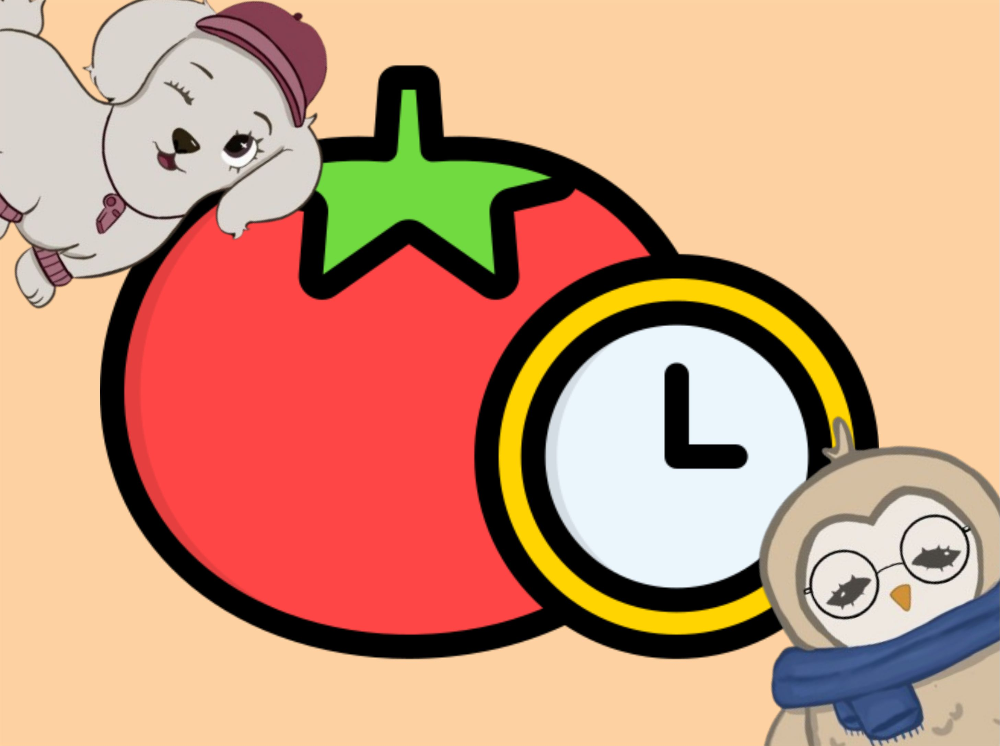

Pomodoro
concentración totalDivide tu estudio en bloques de 25 minutos con descansos de 5. Es ideal para mantener la concentración y evitar el agotamiento mental.
«Trabaja enfocado 25 min, descansa 5 y repite.»
Imagen del Pomodoro
Aquí va la foto del método (temporizador, sesión de estudio…) cuando la subas.
